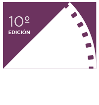

FESTIVAL NACIONAL DE CORTOMETRAJES. GÁLVEZ, SANTA FE. ARG.
9, 10 y 11 de OCTUBRE 2015
¡Bienvenidos!
FESTIVAL NACIONAL DE CORTOMETRAJES. GÁLVEZ, SANTA FE. ARG.
Hombre = Herencia
Descubrimos que se podían hacer muchas cosas e intentar que estas trasciendan en el tiempo. Sabíamos que podíamos generar otro espacio, otra alternativa. La exhibición.
Es allí donde nos focalizamos y armamos la primera muestra de cortometrajes, de convocatoria provincial, allá por 2006. En esos años, el lenguaje audiovisual empezaba a crecer, se abrían las primeras escuelas de cine públicas y privadas. Nacían nuevas carreras afines, y empezaban a programarse los festivales. Ese era el contexto, y nosotros estuvimos allí, acompañando ese momento e instalándonos.
Hoy, en 2015, cumplimos diez años. Es por esto, que invitamos a todos a acercarse, a compartir este espacio, escuchar su voz y a que nos muestren su mirada. Queremos dejarle esta "herencia" a todos ustedes, los que nos visitan y participan con sus obras.
¡Salud por estos primeros 10 años de ”Pizza, birra y Cortos”!
Adrian Culasso. Director del Festival.
El jurado estará integrado por realizadores del medio audiovisual. Todos ellos son de gran reconocimiento nacional e internacional.
Crítico. Escritor
Guionista. Director
Vestuarista
Listado de cortos seleccionados que formarán parte de la Muestra Competitiva Oficial de la 10˚ edición del festival 2015:
Las siguientes películas se proyectarán en el marco de la 10º edición del festival.
"Vestuarios de cine". Exposición que recorre el trabajo de Roberta Pesci por más de 15 años en el cine, el teatro y la publicidad.
Viernes 9/10, 20:30hs.
“SICA”: Charla informativa sobre los cursos de Formación Profesional, 2016.
Organiza: Fundación Integrar. MTEySS.
Viernes 09/10, 18:00 y Sábado 10/10, 11:00hs.
Muestra de trabajos realizados por tod@s los niños y niñas de la ciudad, inspirados en la película “El viaje de GAIA”. Organiza: Asociación civil Acciones Solidarias y Comedor Santa Margarita. Viernes 09/10, 19:00hs.
Presentación del libro "Las Naves 5: Métodos". Presenta: Julieta Mortatti - Edgardo Dieleke. Sábado 10/10, 18:00hs.
Dirección General: Adrian Culasso - Rut Marega / Producción: Rut Marega / Producción Audiovisual: Sebastian Olivera - Gonzalo Useglio / Diseño Gráfico y Comunicación visual: Sebastián Gorosito / Fotografía del festival: Brenda Michaleck / Hospedaje y Coordinación de invitados: Miriam Usseglio - Alicia Broda COLABORADORES: Federico Fristchi - Carla Culasso - Marianela Visens - Franco Zuliani - Lucas Sastre - Maria Amelia Culasso - Guillermo Lapassini - Maximiliano Raimondi / MEDIOS DE PRENSA LOCALES: Cablevisión Gálvez - Cablenet Triple Play - FM 105 - FM 95 - FM Soem Gálvez - Gálvez Hoy / Planeta Cabezón (Ros) - LT10 (SF)